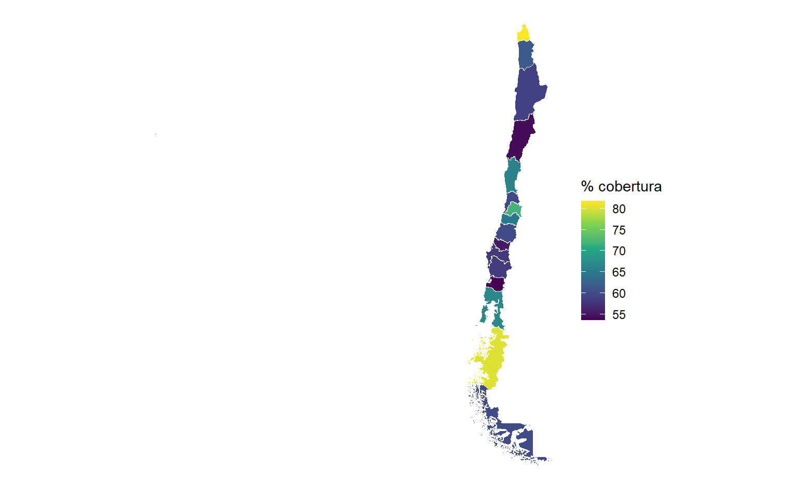

Cobertura nacional
63.1%
Establecimientos que participan
1.882
Prestaciones monitoreadas
93
Subregistro (establecimiento-mes)
53.8%

Cada barra y cada región del mapa indican qué porcentaje de los establecimientos de salud de esa zona registró al menos una actividad de participación ciudadana durante 2025. A nivel nacional, el 63% lo hizo y un 37% no apareció nunca en estos registros. Pero el indicador más revelador es el 53,8% de subregistro a nivel establecimiento-mes: aun entre los que sí participan, en la mayoría de los meses no queda constancia. Esto sugiere que el problema central de estos datos no es la participación en sí, sino cuán sistemáticamente se registra. Como se ve en la pestaña siguiente, buena parte de las diferencias territoriales se explica por el tipo de establecimientos que predomina en cada región.
Cobertura en CESFAM y Hospitales
~100%
Variación institucional sin tipo
84.4%
...y al considerar el tipo
66.7%
Aquí cruzamos el REM con la base maestra de establecimientos del DEIS para ver qué tipo de establecimiento participa. El resultado reordena toda la interpretación: los CESFAM y hospitales participan casi universalmente (~100%), mientras que los servicios de urgencia (SAPU 13%, SUR 2%) y las postas rurales (60%) quedan muy por debajo. Esto indica que gran parte del “no registro” no es negligencia, sino diseño: en urgencias y postas pequeñas las estructuras de participación (consejos, cabildos) no forman parte de su modelo de atención. Al incorporar el tipo al modelo estadístico, la variación inexplicada entre establecimientos baja de 84% a 67%: el tipo explica una parte importante, pero el 67% restante muestra que, incluso entre establecimientos iguales, persisten diferencias reales en cómo se involucran con la comunidad.
Participación de pueblos originarios
97.287
Participación de migrantes
92.787
% pueblos originarios del total
2.9%
Estas barras muestran qué proporción de las personas que participan pertenece a pueblos originarios o es migrante, en cada región. El patrón sigue de cerca la demografía real del país: la participación de pueblos originarios se concentra en La Araucanía (22%), Los Lagos y Aysén —territorios mapuche y huilliche—, mientras que la de migrantes se eleva en Antofagasta (47%) y Tarapacá, las regiones mineras del norte con mayor población migrante. Que los datos reproduzcan esta geografía sin que se lo indiquemos es una señal de que la medición es fidedigna. La otra cara: en varias regiones del centro estas cifras caen casi a cero, lo que marca dónde estos grupos quedan invisibles en el registro de participación y, por tanto, dónde conviene reforzar la inclusión.
A la izquierda, a través de qué mecanismos participa la ciudadanía. Llama la atención que las dos categorías mayores sean “Otras instancias” (sin clasificar) y “Uso de TICs y redes sociales”, por encima de los consejos formales como los Consejos de Desarrollo Local o los Consejos Consultivos. Esto sugiere dos cosas: la participación digital ya pesa de verdad, y el formulario no captura bien el tipo de instancia (mucho queda en el cajón de “otras”). A la derecha, cómo se registra la identidad de género: domina abrumadoramente “No revelado”, es decir, el sistema casi no recoge esta dimensión. Aun así, la presencia de personas Trans y No binarie —aunque pequeña (~1.600 registros)— es un avance de visibilidad estadística poco habitual en datos públicos chilenos.
Más allá de cuántos reclamos se reciben, esta sección mide con qué calidad los responde el sistema: el porcentaje que se contesta fuera del plazo legal (mientras más alto, peor). La diferencia entre territorios es enorme: en Coquimbo (44%) y Valparaíso (33%) una fracción muy alta de los reclamos se responde tarde, frente a Magallanes (<1%), casi siempre en plazo. Es una desigualdad que no tiene que ver con el volumen de reclamos sino con la capacidad de gestión de cada red, y señala dónde el derecho ciudadano a una respuesta oportuna se está cumpliendo y dónde no.
Cada línea sigue, mes a mes, el volumen de actividades registradas en uno de los tres grandes temas. El rasgo dominante es la estacionalidad: el registro cae en enero-febrero (el verano austral, con menor actividad administrativa) y se sostiene de marzo en adelante, reflejando el ciclo de gestión del sistema de salud más que un cambio real en la participación de la gente. También se aprecia la escala: el volumen está dominado por OIRS y reclamos, mientras que la participación social y la satisfacción usuaria operan en magnitudes mucho menores.
ICC barrera (¿registra o no?)
84.4%
ICC intensidad (¿cuánto?)
66.7%
Mejora del modelo (AIC)
40.766 → 22.722
Para separar dos preguntas distintas —¿un establecimiento registra participación? y ¿cuánta?— usamos un modelo de barrera (hurdle) con efectos aleatorios por establecimiento. Su resultado más fuerte: el 84% de la variación en si se registra está entre establecimientos, no dentro de ellos a lo largo del año. En otras palabras, registrar participación es un rasgo estable de cada establecimiento, no algo que fluctúe al azar. Una parte de ese rasgo es el tipo de establecimiento (al incluirlo, la variación inexplicada baja a 67%), y otra parte es la estacionalidad (la probabilidad de registrar se multiplica de marzo en adelante). La implicación para la política pública es clara: para reducir el subregistro conviene actuar sobre establecimientos concretos que estructuralmente no participan —y sobre los tipos donde esto es más frecuente—, más que sobre regiones tratadas como un todo.